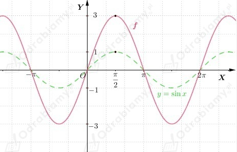
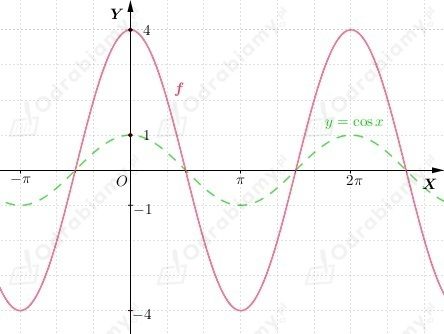
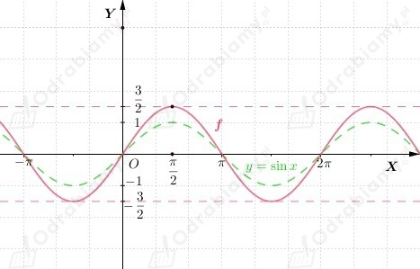
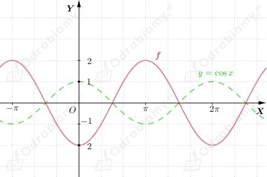
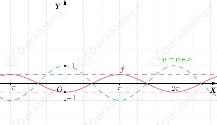
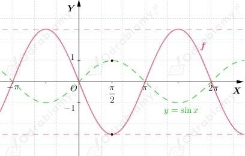

a)
Z treści zadania wiemy, że
Zauważmy, że kolorem zielonym został naszkicowany wykres funkcji g.
Jeśli do wykresu funkcji g należy punkt (𝜋, -1), to do wykresu funkcji f należy punkt (𝜋, -1/2), a do wykresu funkcji h -- punkt (𝜋, -2).
Zatem możemy odczytać, że kolorem niebieskim został naszkicowany wykres funkcji f, natomiast czerwonym wykres funkcji h.
Odczytajmy zbiór wartości każdej z funkcji.
b)
Z treści zadania wiemy, że
Zauważmy, że kolorem zielonym został naszkicowany wykres funkcji g.
Jeśli do wykresu funkcji g należy punkt (𝜋, -1), to do wykresu funkcji f należy punkt (𝜋, -1/2), a do wykresu funkcji h -- punkt (𝜋, -2).
Zatem możemy odczytać, że kolorem niebieskim został naszkicowany wykres funkcji h, natomiast czerwonym wykres funkcji f.
Odczytajmy zbiór wartości każdej z funkcji.
| Przypomnijmy, że dla funkcji y=asinx oraz dla funkcji y=acosx, a≠0, liczbę |a| nazywamy amplitudą wykresu tej funkcji. |
a)
Jeśli do wykresu funkcji y=sinx należy punkt (𝜋/2, 1), to do wykresu funkcji f należy punkt (𝜋/2, 3).
Wykres funkcji f jest "rozciągnięty" wzdłuż osi OY w stosunku do wykresu funkcji y=sinx.
Wykres funkcji

Zbiór wartości funkcji f
Amplituda wykresu funkcji f: 3
b)
Jeśli do wykresu funkcji y=cosx należy punkt (0, 1), to do wykresu funkcji f należy punkt (0, 4).
Wykres funkcji f jest "rozciągnięty" wzdłuż osi OY w stosunku do wykresu funkcji y=cosx.
Wykres funkcji

Zbiór wartości funkcji f
Amplituda wykresu funkcji f: 4
c)
Jeśli do wykresu funkcji y=sinx należy punkt (𝜋/2, 1), to do wykresu funkcji f należy punkt (𝜋/2, 3/2).
Wykres funkcji f jest "rozciągnięty" wzdłuż osi OY w stosunku do wykresu funkcji y=sinx.
Wykres funkcji

Zbiór wartości funkcji f
Amplituda wykresu funkcji f: 3/2
d)
Jeśli do wykresu funkcji y=cosx należy punkt (0, 1), to do wykresu funkcji f należy punkt (0, -2).
Wykres funkcji

Zbiór wartości funkcji f
Amplituda wykresu funkcji f: 2
e)
Jeśli do wykresu funkcji y=cosx należy punkt (0, 1), to do wykresu funkcji f należy punkt (0, -1/2).
Wykres funkcji

Zbiór wartości funkcji f
Amplituda wykresu funkcji f: 1/2
f)
Jeśli do wykresu funkcji y=sinx należy punkt (𝜋/2, 1), to do wykresu funkcji f należy punkt (𝜋/2, -2,5).
Wykres funkcji

Zbiór wartości funkcji f
Amplituda wykresu funkcji f: 5/2